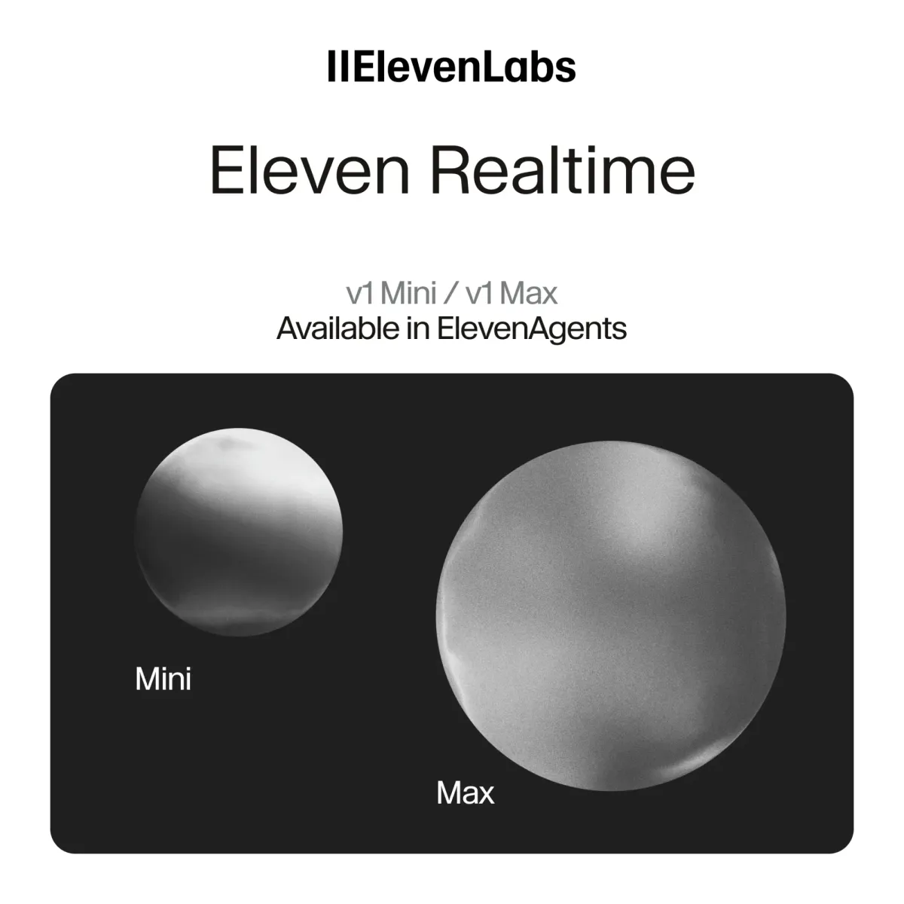

Threads｜Eleven Realtime Mini／Max：即時語音 Agent 不是「換 URL 就無痛搬家」

一句話摘要
Eleven Realtime 把低延遲語音對話與 agent 所需的回合處理打包成可直接使用的模型；選 Mini 或 Max 的關鍵不是「誰比較像真人」，而是任務複雜度、工具權限、延遲、成本與可測試性。尤其在電話、預約、客服或外部 API 情境，先把權限和失敗處理設好，比追逐首音毫秒數更重要。
社群貼文說了什麼
Threads 帳號 `it.oppa.twhk` 將產品描述為原生 Speech-to-Speech 架構，並列出兩款模型：Mini 側重低成本日常對話，Max 側重「回應前推理」與多步工具呼叫；貼文也稱能和 OpenAI Realtime API 相容。
這個方向有第一方文件支持，但下列敘述要分開看：
- **可確認**：有 Eleven Realtime v1 Mini 與 v1 Max；Mini 是預設、最低延遲與成本的選項，Max 則會在回應前推理，面向複雜指令與多步工具使用，成本較高。
- **可確認**：Realtime API 使用與 OpenAI Realtime API 相同的 WebSocket transport、client/server events，既有 OpenAI Realtime SDK client 可改連 ElevenLabs endpoint。
- **不應泛化**：貼文中的 570ms／620ms、98.8% 與「0.5 秒真即時」是特定環境或廠商／轉述數字；端到端延遲還會受網路、語言、回合偵測、工具執行與前端播放影響。
- **不應簡化**：相容 wire protocol 不等於「換一個 URL 就無痛搬家」。驗證、session config、聲音、工具 schema、事件處理、資料留存、計費與品質測試仍要重新驗收。
Mini 與 Max：先以工作難度選型
| 選項 | 官方定位 | 何時優先考慮 |
| --- | --- | --- |
| Eleven Realtime v1 Mini | 預設選項、最低延遲與成本 | 對話陪練、角色互動、常見問答、低風險的引導式流程 |
| Eleven Realtime v1 Max | 回應前推理，適合複雜指令和多步工具；成本較高 | 需要跨多個工具查詢、依規則判斷、較長指令與有明確驗收的流程 |
兩款模型都能使用 agent 的 system prompt、voice、tools、knowledge base 與 turn settings。這不代表 Max 應直接被授予更多權限：模型的推理能力與可執行動作的授權，是兩個不同層次。
官方也指出，Realtime models 正逐步開放；若 workspace 沒有 Voice mode，API 對 `realtime_model` 的請求可能被拒絕。因此帳號可用性、區域、訂閱與定價都應以當下官方 dashboard／文件為準。
Realtime、ElevenAgents 與既有文字 agent 的位置
ElevenLabs 文件將語音產品分成三層：
- **Realtime models**：直接給開發者的 Speech-to-Speech 模型 API，適合希望少組裝元件的團隊。
- **ElevenAgents**：完整的多通路 agent 平台；可使用 Realtime models，也可採可配置的 ASR + LLM + TTS + turn-taking pipeline，並提供 workflow、評測、分析與部署能力。
- **Speech Engine**：給已經有文字 chat agent、只想加上語音層的團隊。
「Speech-to-Speech」描述輸入與輸出皆為聲音，不能直接推論內部只由單一模型完成。官方也同時保留可配置的多元件架構；在現有 custom LLM、特定 TTS、轉接或 workflow 需求下，Custom mode 可能仍比較合適。
與 OpenAI Realtime 相容，實際仍要做什麼
官方相容指南描述的遷移方式是：後端向 ElevenLabs 申請**短效 client secret**，前端以它取代 OpenAI API key，並透過 OpenAI Realtime SDK 連向 ElevenLabs 的 WebSocket endpoint。這降低 SDK 與事件協定的替換成本，但不是免驗證的複製貼上。
遷移驗收至少包含：
- **後端安全**：長效 ElevenLabs API key 只留在後端或 secret manager；瀏覽器／行動端只取得針對 session 的短效 credential。
- **對話品質**：以真實中文、混語、停頓、插話、環境雜訊與長輪對話測試 turn-taking；不要只測 demo 腳本。
- **功能等價**：核對 system prompt、voice、session config、工具 schema、streaming events、錯誤碼與重連策略。
- **成本與留存**：重新核對每分鐘模型費、工具或 telephony 成本、錄音／逐字稿保留期、資料所在地與刪除流程。
- **上線控制**：逐步切流、觀察延遲與工具成功率，保留回退到原有供應商或純文字流程的開關。
語音 Agent 的安全採用底線
聲音自然、開口快速，不代表 agent 已經適合接電話或代替人做決策。對電話、排程、CRM、付款、帳號或個資流程，建議：
- **最小權限**：先讓它查詢公開或已授權的有限資料，避免直接讀整個 CRM、收件匣或雲端硬碟。
- **明確告知與身分驗證**：處理真人電話、錄音或敏感資料前，告知對方正在與 AI 互動；高風險變更需另行驗證身分。
- **工具分級**：查詢可自動；建立草稿需可檢閱；付款、取消、傳送、刪除、改約與帳號設定必須人工批准。
- **失敗可退出**：工具逾時、資料不足、模型不確定或使用者要求轉真人時，要清楚說明並立即提供人工管道，不要編造完成結果。
- **保留稽核軌跡**：記錄 prompt／工具請求／結果／批准人，但資料留存採最短必要期間並保護敏感內容。
原始與查核連結
- Threads 分享：https://www.threads.com/share/BAXl31L6HZ/
- Threads canonical：https://www.threads.com/@it.oppa.twhk/post/De4GEp0CLYy
- AI郵報交叉整理：https://www.aiposthub.com/eleven-realtime-mini-max-speech-to-speech-voice-agents/
- ElevenLabs Realtime models 文件：https://elevenlabs.io/docs/eleven-agents/customization/realtime-models
- OpenAI Realtime 相容文件：https://elevenlabs.io/docs/eleven-agents/guides/openai-realtime-compatibility
- ElevenAgents 概覽：https://elevenlabs.io/docs/eleven-agents/overview